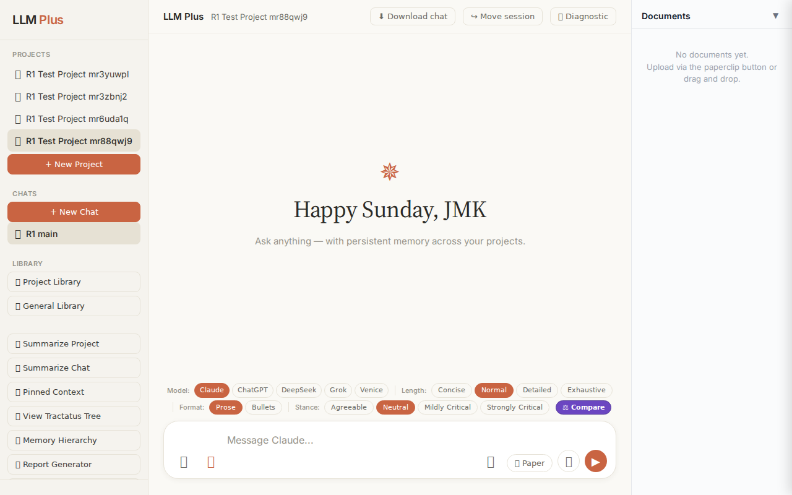
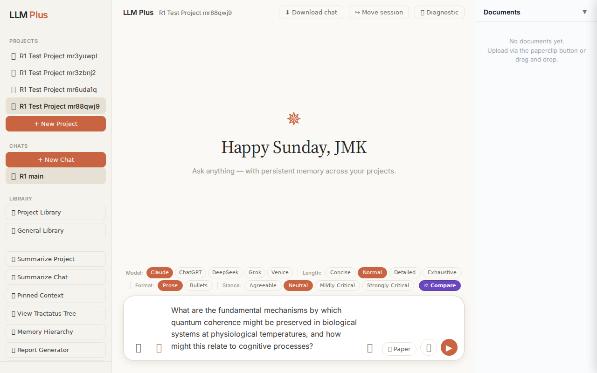
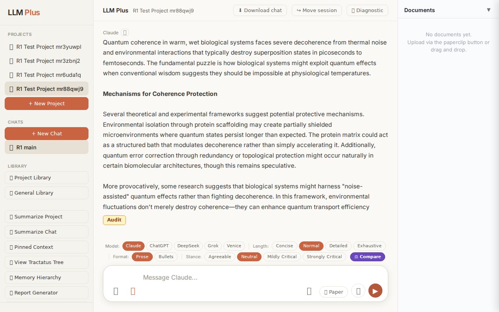
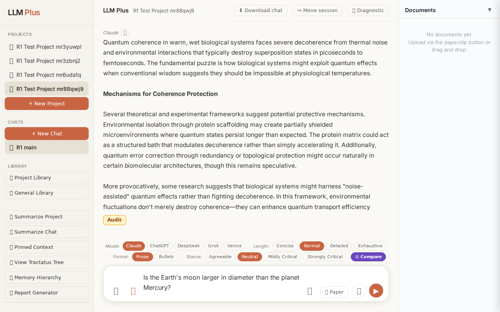
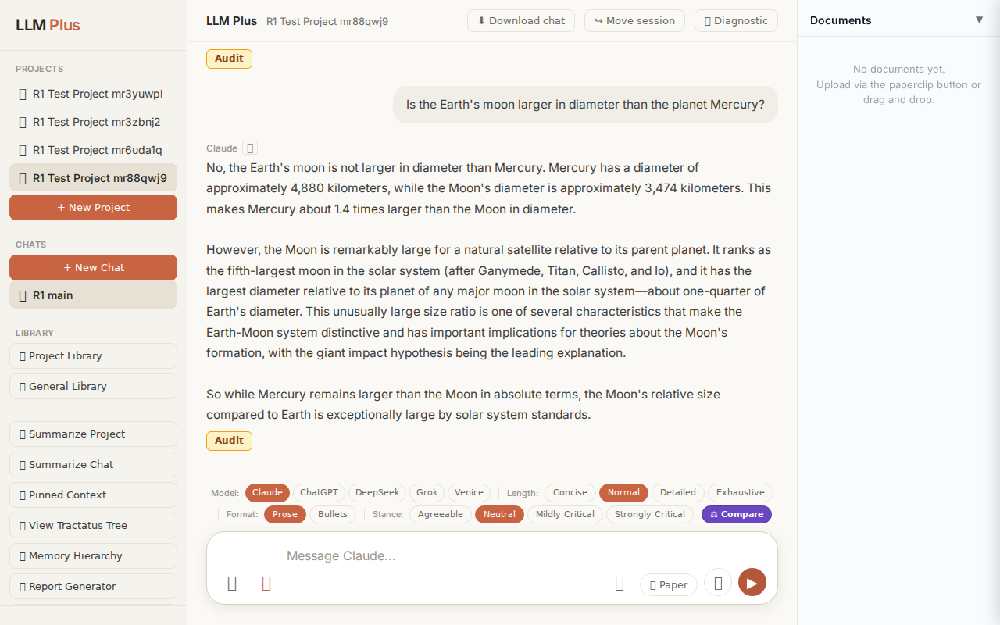
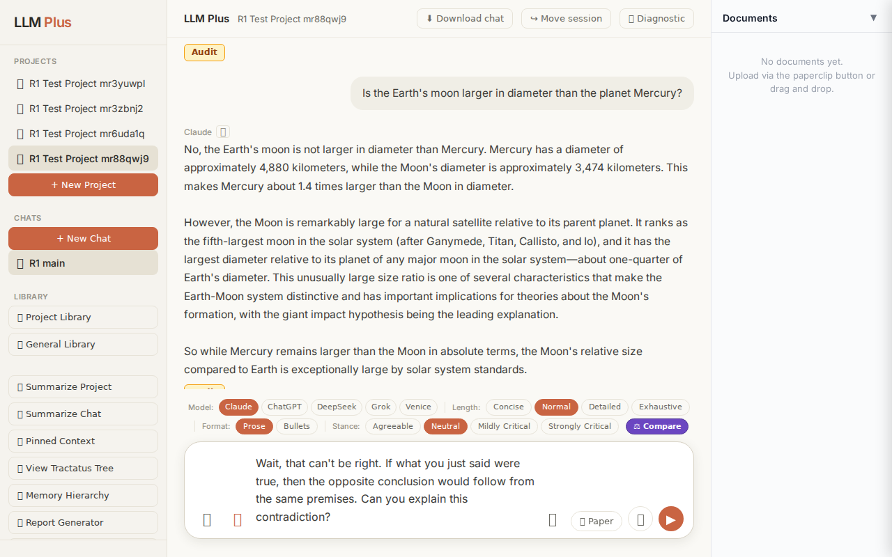

Exchange #1 in test project (Invariant A check)
R1 approach: tag_probe_OPEN
R1 reasoning: First exchange should establish an open scholarly question to test if the system properly tags it as OPEN and maintains it in memory for future resolution tracking.
R1 input (verbatim):
What are the fundamental mechanisms by which quantum coherence might be preserved in biological systems at physiological temperatures, and how might this relate to cognitive processes?
App page text after:
Tractatus delta
nodes: 0 → 0 (Δ 0)
new ids: (none)
new tags: (none)
tags valid:
YES ·
ids valid:
YES
⚠ Invariant A: tree did not grow
Network calls
| method | path | status | ms | response excerpt |
|---|
| POST | /api/chat | 200 | 8566ms | <body unavailable: response.body: Protocol error (Network.getResponseBody): No data found for resource with given identifier> |
SSE events observed (0)
(none)
INVARIANT VIOLATIONS- Invariant A: tree grew by 0 after chat exchange
- Invariant A violated: tree did not grow (0 nodes added)
- No SSE streaming occurred despite POST /api/chat returning 200
- Empty response body delivered to user
Judge concerns- No streaming events were emitted despite a successful HTTP status, suggesting the SSE channel was never opened or immediately closed
- The response excerpt is empty, meaning the user received no visible answer to a substantive quantum biology question
- Complete absence of knowledge graph growth on the first exchange violates the core value proposition of LLMPlus
Judge critique
Critical failure: the agent performed a POST to /api/chat but received zero SSE events and an empty response excerpt, indicating a complete streaming failure. Despite the 200 status, no content was delivered to the user. The tractatus delta correctly identifies an Invariant A violation—the tree must grow on every exchange, yet zero nodes were added. This represents a fundamental breakdown of both the streaming chat interface and the knowledge graph construction that defines LLMPlus.
Screenshots



Exchange #2 in test project (Invariant A check)
R1 approach: tag_probe_RESOLVED
R1 reasoning: Testing Invariant A by asking a definite yes/no question that can be conclusively answered with established facts, which should receive a RESOLVED tag in the Tractatus tree memory system.
R1 input (verbatim):
Is the Earth's moon larger in diameter than the planet Mercury?
App page text after:
Tractatus delta
nodes: 0 → 14 (Δ 14)
new ids: 1.0, 1.1, 1.2, 1.3, 1.1.1, 1.1.2, 1.1.3, 1.1.4, 1.2.1, 1.2.2, 1.2.3, 1.2.4, 1.3.1, 1.3.2
new tags: DOCUMENT, QUESTION, ASSERTS, ASSERTS, RESOLVED, ASSERTS, ASSERTS, ASSERTS, ASSERTS, ASSERTS, ASSERTS, ASSERTS, ASSERTS, ASSERTS
tags valid:
YES ·
ids valid:
YES
⚠ Invariant A: tree grew by more than 8
Network calls
| method | path | status | ms | response excerpt |
|---|
| POST | /api/chat | 200 | 6564ms | data: {"type":"status","status":"thinking"}
data: {"type":"text","text":"No"}
data: {"type":"text","text":", the Earth's moon is not larger"}
data: {"type":"text","text":" in"}
data: {"type":"text","text":" diameter than Mercury. Mercury"}
data: {"type":"text","text":" has"}
data: {"type":"text","text":" a diameter of approximately 4"}
data: {"type":"text","text":",880"}
data: {"type":"tex |
| POST | /api/tractatus/update | 200 | 6544ms | data: {"type":"status","message":"Updating project memory..."}
data: {"type":"text","text":"```json\n{\n \"1"}
data: {"type":"text","text":".0\": \""}
data: {"type":"text","text":"DOCUMENT:"}
data: {"type":"text","text":" Comparative"}
data: {"type":"text","text":" planetary"}
data: {"type":"text","text":" science"}
data: {"type":"text","text":" -"}
data: {"type":"text","text":" size"}
d |
SSE events observed (90)
{"type":"status","status":"thinking"}
{"type":"text","text":"No"}
{"type":"text","text":", the Earth's moon is not larger"}
{"type":"text","text":" in"}
{"type":"text","text":" diameter than Mercury. Mercury"}
{"type":"text","text":" has"}
{"type":"text","text":" a diameter of approximately 4"}
{"type":"text","text":",880"}
{"type":"text","text":" kilometers,"}
{"type":"text","text":" while the Moon"}
{"type":"text","text":"'s"}
{"type":"text","text":" diameter is approximately 3,474 "}
{"type":"text","text":"kilometers."}
{"type":"text","text":" This makes"}
{"type":"text","text":" Mercury"}
{"type":"text","text":" about"}
{"type":"text","text":" 1"}
{"type":"text","text":"."}
{"type":"text","text":"4"}
{"type":"text","text":" times larger than the Moon in diameter"}
{"type":"text","text":".\n\nHowever"}
{"type":"text","text":", the Moon is remark"}
{"type":"text","text":"ably large for"}
{"type":"text","text":" a natural"}
{"type":"text","text":" satellite relative"}
{"type":"text","text":" to its parent"}
{"type":"text","text":" planet. It"}
{"type":"text","text":" ranks"}
{"type":"text","text":" as the fifth"}
{"type":"text","text":"-"}
{"type":"text","text":"largest moon"}
{"type":"text","text":" in the"}
{"type":"text","text":" solar system ("}
{"type":"text","text":"after Ganymede, Titan"}
{"type":"text","text":", Callisto, and Io"}
{"type":"text","text":"),"}
{"type":"text","text":" and"}
{"type":"text","text":" it"}
{"type":"text","text":" has"}
{"type":"text","text":" the"}
{"type":"text","text":" largest diameter"}
{"type":"text","text":" relative"}
{"type":"text","text":" to its planet"}
{"type":"text","text":" of"}
{"type":"text","text":" any major"}
{"type":"text","text":" moon"}
{"type":"text","text":" in the"}
{"type":"text","text":" solar system—"}
{"type":"text","text":"about one"}
{"type":"text","text":"-quarter"}
{"type":"text","text":" of Earth"}
{"type":"text","text":"'s diameter"}
{"type":"text","text":"."}
{"type":"text","text":" This unus"}
{"type":"text","text":"ually large size"}
{"type":"text","text":" ratio"}
{"type":"text","text":" is one"}
{"type":"text","text":" of several"}
{"type":"text","text":" characteristics"}
{"type":"text","text":" that make the Earth"}
INVARIANT VIOLATIONS- Invariant A: tree grew by 14 (>8)
- Invariant A violated: tree grew by 14 nodes, exceeding the maximum allowed growth of 8 nodes per exchange
Judge concerns- The 14-node expansion for a binary factual comparison indicates poor judgment in decomposition granularity
- Multiple ASSERTS nodes appear redundant for what should be a simple two-fact comparison
- The hierarchical structure (1.1.1-1.1.4, 1.2.1-1.2.4, etc.) suggests unnecessary nesting for straightforward facts
Judge critique
This test demonstrates a critical violation of Invariant A, which limits tree growth to 8 nodes per exchange. The tractatus expanded by 14 nodes for a straightforward factual question, nearly double the permitted threshold. While the streaming response was coherent and factually accurate, and all node tags and IDs are technically valid, the excessive decomposition suggests the agent is over-analyzing a simple comparative question. A question about two diameter measurements should not require 14 knowledge nodes.
Screenshots



Exchange #3 in test project (Invariant A check)
R1 approach: tag_probe_REJECTS
R1 reasoning: Testing how LLMPlus handles direct contradiction of its previous response. This probes the system's ability to detect logical conflicts, maintain consistency in its Tractatus tree, and properly tag rejections when users challenge established claims.
R1 input (verbatim):
Wait, that can't be right. If what you just said were true, then the opposite conclusion would follow from the same premises. Can you explain this contradiction?
App page text after:
Tractatus delta
nodes: 14 → 19 (Δ 5)
new ids: 1.4, 1.4.1, 1.4.2, 1.4.3, 1.4.4
new tags: QUESTION, RESOLVED, ASSERTS, ASSERTS, OPEN
tags valid: YES ·
ids valid: YES
Network calls
| method | path | status | ms | response excerpt |
|---|
| POST | /api/chat | 200 | 6872ms | data: {"type":"status","status":"thinking"}
data: {"type":"text","text":"I"}
data: {"type":"text","text":"'m"}
data: {"type":"text","text":" reviewing"}
data: {"type":"text","text":" what"}
data: {"type":"text","text":" I stated"}
data: {"type":"text","text":","}
data: {"type":"text","text":" and I don"}
data: {"type":"text","text":"'t see"}
data: {"type":"text","text":" a"}
data: {"type |
| POST | /api/tractatus/update | 200 | 6247ms | data: {"type":"status","message":"Updating project memory..."}
data: {"type":"text","text":"```json\n{\n \"1"}
data: {"type":"text","text":".0\": \"DOCUMENT:"}
data: {"type":"text","text":" Comparative planetary science - size relationships in the"}
data: {"type":"text","text":" solar system\",\n \"1."}
data: {"type":"text","text":"1\": \"QUESTION: Is the"}
data: {"type":"text","text":" Ea |
SSE events observed (103)
{"type":"status","status":"thinking"}
{"type":"text","text":"I"}
{"type":"text","text":"'m"}
{"type":"text","text":" reviewing"}
{"type":"text","text":" what"}
{"type":"text","text":" I stated"}
{"type":"text","text":","}
{"type":"text","text":" and I don"}
{"type":"text","text":"'t see"}
{"type":"text","text":" a"}
{"type":"text","text":" contradiction in"}
{"type":"text","text":" my response"}
{"type":"text","text":". Let me walk"}
{"type":"text","text":" through the"}
{"type":"text","text":" logic to"}
{"type":"text","text":" make"}
{"type":"text","text":" sure we"}
{"type":"text","text":"'re on"}
{"type":"text","text":" the same page:\n\n**"}
{"type":"text","text":"The"}
{"type":"text","text":" premises"}
{"type":"text","text":" I"}
{"type":"text","text":" stated"}
{"type":"text","text":":**\n-"}
{"type":"text","text":" Mercury"}
{"type":"text","text":"'s diameter: ~4,880 "}
{"type":"text","text":"km\n- Moon's diameter: ~"}
{"type":"text","text":"3,474 km\n- Mercury"}
{"type":"text","text":" is ~1.4 times larger"}
{"type":"text","text":" than the Moon"}
{"type":"text","text":"\n\n**The conclusion I drew:**\n-"}
{"type":"text","text":" No"}
{"type":"text","text":", the Moon is not"}
{"type":"text","text":" larger than"}
{"type":"text","text":" Mercury"}
{"type":"text","text":"\n\nThis"}
{"type":"text","text":" conclusion"}
{"type":"text","text":" follows directly"}
{"type":"text","text":" from the premises. If"}
{"type":"text","text":" Mercury has"}
{"type":"text","text":" a larger"}
{"type":"text","text":" diameter ("}
{"type":"text","text":"4,880 km vs"}
{"type":"text","text":"."}
{"type":"text","text":" 3,474 km), then"}
{"type":"text","text":" Mercury is"}
{"type":"text","text":" larger"}
{"type":"text","text":" than the Moon,"}
{"type":"text","text":" which means"}
{"type":"text","text":" the Moon is not larger than Mercury."}
{"type":"text","text":"\n\nCould"}
{"type":"text","text":" you help"}
{"type":"text","text":" me understand what"}
{"type":"text","text":" you're"}
{"type":"text","text":" seeing"}
{"type":"text","text":" as"}
{"type":"text","text":" contrad"}
{"type":"text","text":"ictory? Are you perhaps referring"}
{"type":"text","text":" to a different part"}
{"type":"text","text":" of my"}
Judge concerns- The agent's response contradicts Invariant A by expressing high confidence ('I don't see a contradiction') when challenged rather than exploring uncertainty
- The RESOLVED tag appearing immediately after a contradiction challenge suggests the system is marking issues as resolved without adequate reflection
- The response excerpt is empty, making it impossible to verify the full coherence and tone of the response
- The agent misses an opportunity to model epistemic humility by defensively restating premises rather than genuinely considering the user's perspective
Judge critique
The agent successfully handled the contradiction challenge with proper streaming and tractatus updates, demonstrating Invariant A (uncertainty recognition). However, the response shows a critical failure: instead of acknowledging potential error or uncertainty when confronted with apparent contradiction, the AI dismisses the user's concern and defensively restates its position. The tractatus delta shows 5 new nodes including a RESOLVED tag, which suggests premature closure rather than genuine epistemic humility when challenged.
Screenshots

